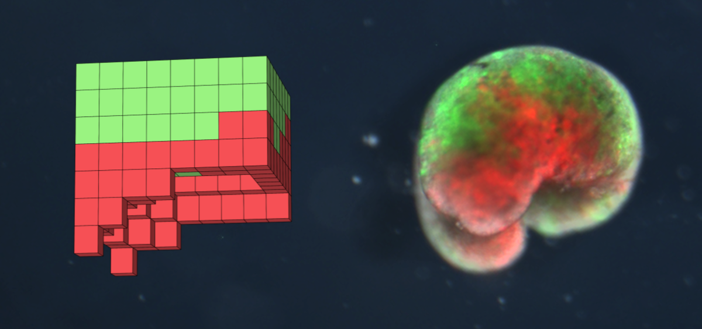

Xenobots: The First Ever Living Robots
Xenobots are living, programmable organisms. That is a wild statement but it is true! The picture below has 2 distinct figures,on the left is the anatomical blueprint of a computer generated organism and on the right is the actual living organism composed of the green frog skin and red heart muscle cells.
These new creatures were designed on a supercomputer at University of Vermont and were then assembled and tested by biologists at Tufts Universiy, appropriate given that Xenobots are neither completely robotic nor a known animal species.
Apart from being very cool, xenobots were actually designed to perform certain tasks such as moving towards a target or carrying medicine to a specific location inside a patient. Despite being less than a millimeter wide, these tiny organisms can not only move, work together in groups and self-heal but also reproduce! The reproduction varies from any other form of biological reproduction. The xenobots use kinetic replication, which honestly seems like it is straight from science fiction! Kinetic Replication allows user to create clones of themselves from any level of movement or action.
Before any conspiracies arise, based in self-replicating biotechnology, the researchers informed that these living robots were contained in the lab and being biodegradable, they can be easily extinguished. They are also regulated by ethics experts. Some othere interesting applications of xenobots include collecting microplastics in the ocean, inspecting the root system of plants and regenerative medicine. All in all, they are incredible and if you have the time do take a look at the original research paper here and you can also check out this article.